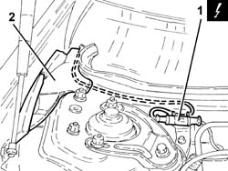
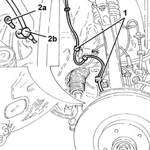

3340A30 rpm sensor (one) of one l/h or r/h front wheel - r+r
- Path
- Procedures > 33 BRAKING SYSTEM > 3340 A(B.S. ANTI-LOCK BRAKING SYSTEM .) > 3340A abs check/adjustment devices > 3340A30 rpm sensor (one) of one l/h or r/h front wheel - r+r
- Kind
- repair procedure (removal / refitting; the operation number is the code)
- Applies to
- all engines; all production periods
- Interactive page
- https://sloeber94.github.io/elrnDB-a147/en/#/3025250
Applies to: all engines; all production periods
 Removing
Removing
 Refitting
RefittingPosition the vehicle on the ramp.
Ensure that the ignition key is in the OFF postition, then disconnect the battery negative terminal.
 | Name | Connector |
|---|---|---|
- | Battery |
Proceed with the removal 4450B10 Front WHEEL (one) - R.R. .
Proceed with the removal 7055B64 Engine compartment DUST shield in front wheel arch (one), left or right - R.R. .
Proceed with the removal 7055B42 Additional FRONT WHEEL ARCH (one), left or right - R.R. .
1. Disconnect the electrical connection for the front wheel rpm sensor.
| Name | Connector |
|---|---|---|
1 | Left. front wheel sensor for ABS |
| Name | Connector |
|---|---|---|
1 | Right. front wheel sensor for ABS |
2. Move aside as much as necessary the rubber side guard in the engine compartment and disengage the electrical wiring from the front wheel rpm sensor.

Applies to: all engines; all production periods
1. Disengage the front wheel rpm sensor electrical wiring from the attachments in the wheelarch.
2. Undo the bolt (2a) and remove the front wheel rpm sensor (2b) complete with electrical wiring.

Applies to: all engines; all production periods
Refitting
RemovingPlace the front wheel rpm sensor in its seating complete with electrical wiring and tighten the bolt to the recommended torque.
 | Fastening | Component | Ø | Value (daNm) |
|---|---|---|---|---|
- | Bolt | ABS SYSTEM FRONT WHEEL RPM SENSOR | M6 | 0.7 ÷ 0.9 |
Secure the front wheel rpm sensor electrical wiring to the attachments in the wheelarch.
Place the front wheel rpm sensor electrical wiring in its seating in the engine compartment, and connect the electrical connection.
Place the engine compartment rubber side guard in its seating.
Proceed with the refitting 7055B42 Additional FRONT WHEEL ARCH (one), left or right - R.R. .
Proceed with the refitting 7055B64 Engine compartment DUST shield in front wheel arch (one), left or right - R.R. .
Proceed with the refitting 4450B10 Front WHEEL (one) - R.R. .
Connect the battery terminal (-).
Remove the car from the ramp.
Topics linked from this page (6)
- 4450B10 Front WHEEL (one) - R.R.
- 7055B42 Additional FRONT WHEEL ARCH (one), left or right - R.R.
- 7055B64 Engine compartment DUST shield in front wheel arch (one), left or right - R.R.
- A1B Battery ( Connectors )
- K70 Left. front wheel sensor for ABS
- K71 Right. front wheel sensor for ABS